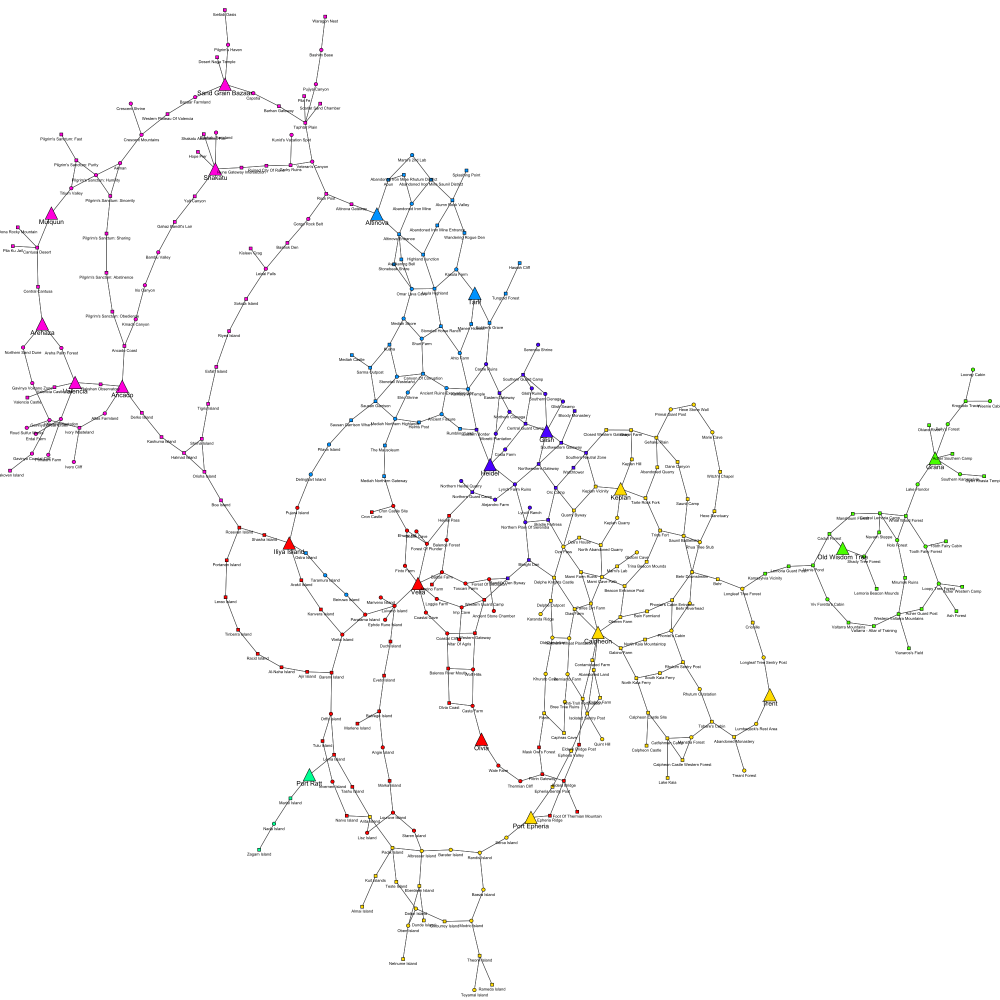

Using scraped data
Now we can analyze.
# Import packages
import MySQLdb
import numpy as np
import pandas as pd
import re
# Create connection to MySQL
conn = MySQLdb.connect(host= "localhost",
user="yourusername",
passwd="yourpassword",
db="bdodae")
x = conn.cursor()
pd.options.display.max_rows = 6
# Table 'node' that we obtained from web scraping bdodae.com
node = pd.read_sql('SELECT * FROM node', con = conn)
node
| NODE_ID | NAME | CP | AREA | TYPE | REGION_MOD_PERCENT | CONNECTIONS | |
|---|---|---|---|---|---|---|---|
| 0 | 1 | Abandoned Iron Mine | 2 | Mediah | Worker Node | 0.0 | Abandoned Iron Mine Saunil District, Abandoned... |
| 1 | 2 | Abandoned Iron Mine Entrance | 1 | Mediah | Connection Node | NaN | Highland Junction, Alumn Rock Valley |
| 2 | 3 | Abandoned Iron Mine Rhutum District | 1 | Mediah | Connection Node | NaN | Abandoned Iron Mine, Abun |
| ... | ... | ... | ... | ... | ... | ... | ... |
| 356 | 357 | Yalt Canyon | 1 | Valencia | Connection Node | NaN | Shakatu, Gahaz Bandit's Lair |
| 357 | 358 | Yianaros's Field | 1 | Kamasylvia | Connection Node | NaN | Western Valtarra Mountains |
| 358 | 359 | Zagam Island | 1 | Margoria | Connection Node | NaN | Nada Island |
359 rows × 7 columns
# Table 'subnode' that we obtained from web scraping bdodae.com
subnode = pd.read_sql('SELECT * FROM subnode', con = conn)
subnode
| SUBNODE_ID | NAME | CP | BASE_WORKLOAD | CURRENT_WORKLOAD | ITEM1 | ITEM2 | ITEM3 | ITEM4 | YIELD1 | YIELD2 | YIELD3 | YIELD4 | DISTANCE1 | DISTANCE2 | DISTANCE3 | CITY1 | CITY2 | CITY3 | |
|---|---|---|---|---|---|---|---|---|---|---|---|---|---|---|---|---|---|---|---|
| 0 | 1 | Abandoned Iron Mine - Mining.1 | 3 | 200 | 250 | Zinc Ore | Powder Of Time | Platinum Ore | None | 7.86 | 1.86 | 0.95 | NaN | 1113 | 2063 | NaN | Altinova | Tarif | None |
| 1 | 2 | Abandoned Iron Mine - Mining.2 | 3 | 500 | 100 | Iron Ore | Powder Of Darkness | Rough Black Crystal | None | 10.53 | 1.80 | 1.08 | NaN | 1113 | 2063 | NaN | Altinova | Tarif | None |
| 2 | 3 | Ahto Farm - Farming.1 | 2 | 200 | 100 | Cotton | Cotton Yarn | None | None | 12.53 | 0.85 | NaN | NaN | 702 | 2000 | 2325.0 | Tarif | Heidel | Altinova |
| ... | ... | ... | ... | ... | ... | ... | ... | ... | ... | ... | ... | ... | ... | ... | ... | ... | ... | ... | ... |
| 169 | 170 | Weenie Cabin - Gathering.1 | 2 | 140 | 140 | Volcanic Umbrella Mushroom | Green Pendulous Mushroom | None | None | 7.70 | 6.90 | NaN | NaN | 1608 | 3025 | 6005.0 | Grana | Old Wisdom Tree | Trent |
| 170 | 171 | Weita Island - Fish Drying Yard.1 | 1 | 2400 | 1200 | Dried Surfperch | Dried Bluefish | Dried Maomao | Dried Nibbler | 3.60 | 1.80 | 0.90 | 0.08 | 1620 | 3291 | 3340.0 | Iliya Island | Velia | Olvia |
| 171 | 172 | Wolf Hills - Lumbering.1 | 1 | 150 | 100 | Ash Timber | None | None | None | 4.43 | NaN | NaN | NaN | 340 | 1902 | NaN | Olvia | Velia | None |
172 rows × 19 columns
# Get minimum distance from all 3 distance columns
min_col = subnode[["DISTANCE1", "DISTANCE2", "DISTANCE3"]].idxmin(axis=1)
# Get corresponding closest city from minimum distance
min_city = []
min_dist = []
for x, i in zip(min_col, range(len(min_col))):
num = re.search('\d', x).group(0)
min_city.append(subnode.iloc[i, :]["CITY" + str(num)])
min_dist.append(subnode.iloc[i, :][x])
# New columns that we will join onto 'node'
subnode["MIN_DIST"] = min_dist
subnode["MIN_CITY"] = min_city
# Take the names from 'subnode' and cut off the ending to obtain the main node name
subnode["NODE_NAME"] = subnode["NAME"]
for name, i in zip(subnode["NODE_NAME"], range(np.shape(subnode)[0])):
name = re.split(' - ', name)[0]
subnode.at[i, "NODE_NAME"] = name
# Left-joining onto node to include distance and city information for worker nodes
node_dist = pd.merge(node, subnode[["NODE_NAME", "MIN_DIST", "MIN_CITY"]].drop_duplicates("NODE_NAME"), how = "left", left_on = "NAME", right_on = "NODE_NAME")
node_dist
| NODE_ID | NAME | CP | AREA | TYPE | REGION_MOD_PERCENT | CONNECTIONS | NODE_NAME | MIN_DIST | MIN_CITY | |
|---|---|---|---|---|---|---|---|---|---|---|
| 0 | 1 | Abandoned Iron Mine | 2 | Mediah | Worker Node | 0.0 | Abandoned Iron Mine Saunil District, Abandoned... | Abandoned Iron Mine | 1113.0 | Altinova |
| 1 | 2 | Abandoned Iron Mine Entrance | 1 | Mediah | Connection Node | NaN | Highland Junction, Alumn Rock Valley | NaN | NaN | NaN |
| 2 | 3 | Abandoned Iron Mine Rhutum District | 1 | Mediah | Connection Node | NaN | Abandoned Iron Mine, Abun | NaN | NaN | NaN |
| ... | ... | ... | ... | ... | ... | ... | ... | ... | ... | ... |
| 356 | 357 | Yalt Canyon | 1 | Valencia | Connection Node | NaN | Shakatu, Gahaz Bandit's Lair | NaN | NaN | NaN |
| 357 | 358 | Yianaros's Field | 1 | Kamasylvia | Connection Node | NaN | Western Valtarra Mountains | NaN | NaN | NaN |
| 358 | 359 | Zagam Island | 1 | Margoria | Connection Node | NaN | Nada Island | NaN | NaN | NaN |
359 rows × 10 columns
igraph
Visualizing our node system.
# Import packages
import itertools
import igraph
# Create graph
g = igraph.Graph()
# Generates unnamed vertices for graph
g.add_vertices(np.shape(node)[0])
# Generates edges for graph
g.vs["name"] = node["NAME"]
for name, x, cp in zip(node_dist["NAME"], node_dist["CONNECTIONS"], node_dist["CP"]):
# Splits the connections from 'node' into parts
conn = re.split(', ', x)
n_conn = len(conn)
# Adds edges between main node and its connections
g.add_edges(zip(itertools.repeat(name, n_conn), conn))
# Adding vertex attributes
g.vs["name"] = node["NAME"]
g.vs["area"] = node["AREA"]
g.vs["type"] = node["TYPE"]
g.vs["cp"] = node["CP"]
# Checking to see if our graph has the correct number of vertices and edges
igraph.summary(g)
IGRAPH UN-T 359 886 --
+ attr: area (v), cp (v), name (v), type (v)
# Import cairo to display igraph
import cairo
layout = g.layout_kamada_kawai()
# Dictionaries defining visual styling for the graph
size_dict = {"Connection Node": 6, "Town Node": 25, "Worker Node": 7}
shape_dict = {"Connection Node" : "rectangle", "Town Node" : "triangle-up", "Worker Node" : "circle"}
color_dict = {"Balenos" : igraph.RainbowPalette(len(set(node["AREA"])))[0],
"Calpheon" : igraph.RainbowPalette(len(set(node["AREA"])))[1],
"Kamasylvia" : igraph.RainbowPalette(len(set(node["AREA"])))[2],
"Margoria" : igraph.RainbowPalette(len(set(node["AREA"])))[3],
"Mediah" : igraph.RainbowPalette(len(set(node["AREA"])))[4],
"Serendia" : igraph.RainbowPalette(len(set(node["AREA"])))[5],
"Valencia" : igraph.RainbowPalette(len(set(node["AREA"])))[6]}
label_size_dict = {"Connection Node": 8, "Town Node": 13, "Worker Node": 8}
label_dist_dict = {"Connection Node": 2, "Town Node": 1, "Worker Node": 2}
# Configure visual styling and plot
visual_style = {}
visual_style["vertex_size"] = [size_dict[type_] for type_ in g.vs["type"]]
visual_style["vertex_shape"] = [shape_dict[type_] for type_ in g.vs["type"]]
visual_style["vertex_color"] = [color_dict[area] for area in g.vs["area"]]
visual_style["vertex_label"] = g.vs["name"]
visual_style["vertex_label_size"] = [label_size_dict[type_] for type_ in g.vs["type"]]
visual_style["vertex_label_dist"] = [label_dist_dict[type_] for type_ in g.vs["type"]]
visual_style["edge_curved"] = False
visual_style["layout"] = layout
visual_style["bbox"] = (2000, 2000)
visual_style["margin"] = 20
### Plot without saving
igraph.plot(g, **visual_style)
### Saves to file "node_map.png"
# igraph.plot(g, "node_map.png", **visual_style)

Calculate value of each subnode
Using the worker mechanics explained by Black Desert Analytics I can determine a value for each subnode given some worker.
- Work Speed and Work Load
- Work loads for nodes work is what most players will call ticks. Your ticks are calculated by doing Workload/Workspeed and then rounded UP to the nearest whole number (4.1=5). Each tick takes 10 minutes (5 minutes for crates).
- Movement Speed and Distance
- This is simply determined by (distance/movement speed) $\times$ 2 $\times$ Seconds. The reason for the x2 is the worker needs to travel to the node and then travel back to his home base to deposit what he gathered.
- The final cycle time is simply these two formulas added up.
Thus, the total time taken for a worker to finish one cycle is given by:

For crates we have:
# Import packages
import MySQLdb
import numpy as np
import pandas as pd
import re
import math
# Create connection to MySQL
conn = MySQLdb.connect(host= "localhost",
user="yourusername",
passwd="yourpassword",
db="bdodae")
x = conn.cursor()
pd.options.display.max_rows = 6
# Table 'node' that we obtained from web scraping bdodae.com
node = pd.read_sql('SELECT * FROM node', con = conn)
# Table 'subnode' that we obtained from web scraping bdodae.com
subnode = pd.read_sql('SELECT * FROM subnode', con = conn)
# Table 'prices' that we obtained from web scraping bdodae.com
prices = pd.read_sql('SELECT * FROM prices', con = conn)
# Worker dictionary containing 4 types of workers
# Workers except Default are base artisan-level workers
worker_dict = {'Default' : {'Name' : 'Default', 'Workspeed' : 100, 'Movespeed' : 4.25, 'Stamina' : 23},
'Goblin' : {'Name' : 'Goblin', 'Workspeed' : 150, 'Movespeed' : 7.5, 'Stamina' : 15},
'Human' : {'Name' : 'Human', 'Workspeed' : 105, 'Movespeed' : 4.5, 'Stamina' : 23},
'Giant' : {'Name' : 'Giant', 'Workspeed' : 95, 'Movespeed' : 3.75, 'Stamina' : 35}}
# Calculate worker profits/gains for each node and put it in the subnode dataframe
items = subnode[["ITEM1", "ITEM2", "ITEM3", "ITEM4"]]
yields = subnode[["YIELD1", "YIELD2", "YIELD3", "YIELD4"]]
total_profits_user_avg_list = []
total_profits_rec_list = []
for i in range(len(subnode)):
workload = subnode.iloc[i, :]["CURRENT_WORKLOAD"]
total_profits_user_avg = 0
total_profits_rec = 0
for item, yield_ in zip(items.iloc[i, :], yields.iloc[i, :]):
# If the item and yield exists (i.e. is not None)
if(item and yield_):
user_item_price = int(prices[prices["ITEM"] == item]["USER_AVERAGE"])
recent_item_price = int(prices[prices["ITEM"] == item]["RECENT_VALUE"])
total_profits_user_avg += yield_ * user_item_price
total_profits_rec += yield_ * recent_item_price
total_profits_user_avg_list.append(total_profits_user_avg)
total_profits_rec_list.append(total_profits_rec)
# Profits generated per worker cycle
# We want to standardize this to profit per hour
profit = subnode[["SUBNODE_ID", "NAME", "CP", "BASE_WORKLOAD", "CURRENT_WORKLOAD", "MIN_DIST"]].copy()
profit["PROFITS_USER_AVG"] = total_profits_user_avg_list
profit["PROFITS_REC"] = total_profits_rec_list
# Calculate per hour income for each worker
# Pass arguments as worker_profit(**worker_dict['WORKER'])
def get_cycle_time(Workload, Workspeed, Distance, Movespeed):
# Return time in minutes
return(((math.ceil(Workload / Workspeed) * 600) + (Distance / Movespeed) * 2) / 60)
hourly_profit_dict = {}
# Calculates hourly profit for all subnodes for one worker
def get_hourly_profit(Name, Workspeed, Movespeed, Stamina):
hourly_profit_user_list = []
hourly_profit_rec_list = []
for workload, distance, user, recent in zip(profit["CURRENT_WORKLOAD"],
profit["MIN_DIST"],
profit["PROFITS_USER_AVG"],
profit["PROFITS_REC"]):
# Cycle time in minutes
cycle_time = get_cycle_time(workload, Workspeed, distance, Movespeed)
cycles_per_hour = 60 / cycle_time
hourly_profit_user = cycles_per_hour * user
hourly_profit_rec = cycles_per_hour * recent
hourly_profit_user_list.append(hourly_profit_user)
hourly_profit_rec_list.append(hourly_profit_rec)
hourly_profit_dict[Name + '_hourly_profit_user'] = hourly_profit_user_list
hourly_profit_dict[Name + '_hourly_profit_rec'] = hourly_profit_rec_list
# Loop that gets hourly profit for all workers
for worker in worker_dict:
get_hourly_profit(**worker_dict[worker])
# Writes our dictionary with worker profits into our 'profit' dataframe
for col in hourly_profit_dict:
profit[col] = hourly_profit_dict[col]
Using plotnine and ggplot
Similar to R’s ggplot2
import pandas as pd
import numpy as np
from plotnine import *
import warnings
warnings.filterwarnings('ignore')
profit
| SUBNODE_ID | NAME | CP | BASE_WORKLOAD | CURRENT_WORKLOAD | MIN_DIST | PROFITS_USER_AVG | PROFITS_REC | Default_hourly_profit_user | Default_hourly_profit_rec | Goblin_hourly_profit_user | Goblin_hourly_profit_rec | Human_hourly_profit_user | Human_hourly_profit_rec | Giant_hourly_profit_user | Giant_hourly_profit_rec | TYPE | |
|---|---|---|---|---|---|---|---|---|---|---|---|---|---|---|---|---|---|
| 0 | 1 | Abandoned Iron Mine - Mining.1 | 3 | 200 | 250 | 1113 | 13732.70 | 16304.87 | 21274.839004 | 25259.671021 | 33028.941742 | 39215.347408 | 21544.619407 | 25579.981987 | 20654.127674 | 24522.698864 | Mining |
| 1 | 2 | Abandoned Iron Mine - Mining.2 | 3 | 500 | 100 | 1113 | 12188.25 | 14125.41 | 39045.273241 | 45250.999372 | 48926.962533 | 56703.251561 | 40083.160780 | 46453.845311 | 24463.481267 | 28351.625781 | Mining |
| 2 | 3 | Ahto Farm - Farming.1 | 2 | 200 | 100 | 702 | 11028.27 | 13413.30 | 42673.882398 | 51902.754173 | 50434.161585 | 61341.310976 | 43532.644737 | 52947.236842 | 25217.080793 | 30670.655488 | Farming |
| ... | ... | ... | ... | ... | ... | ... | ... | ... | ... | ... | ... | ... | ... | ... | ... | ... | ... |
| 169 | 170 | Weenie Cabin - Gathering.1 | 2 | 140 | 140 | 1608 | 9022.60 | 11337.80 | 16600.021645 | 20859.588745 | 31572.083981 | 39673.483670 | 16964.498607 | 21317.590529 | 15786.041991 | 19836.741835 | Gathering |
| 170 | 171 | Weita Island - Fish Drying Yard.1 | 1 | 2400 | 1200 | 1620 | 14364.32 | 15288.86 | 6494.506383 | 6912.516489 | 9883.706422 | 10519.857798 | 6529.236364 | 6949.481818 | 5968.554017 | 6352.711911 | Fish |
| 171 | 172 | Wolf Hills - Lumbering.1 | 1 | 150 | 100 | 340 | 2387.77 | 2613.70 | 11310.489474 | 12380.684211 | 12445.905405 | 13623.532819 | 11444.341420 | 12527.201183 | 6222.952703 | 6811.766409 | Lumbering |
172 rows × 17 columns
# Get subnode type from its name
type_list = []
for name in profit['NAME']:
type_ = re.split(' - ', name)[1]
type_ = re.search('\w+', type_).group(0)
type_list.append(type_)
profit['TYPE'] = type_list
# Density plot of subnode cycle profits
profit_cycle = pd.melt(profit[["PROFITS_USER_AVG", "PROFITS_REC", "TYPE"]], id_vars = ['TYPE'])
(ggplot(profit_cycle, aes('value', color = 'variable'))
+ geom_density())
<ggplot: (-9223371918799307355)>
# Comparison of subnode cycle profits vs CP cost for different types of subnode materials
(ggplot(profit, aes(x = 'CP', y = 'PROFITS_USER_AVG', color = 'factor(TYPE)'))
+ geom_point()
+ stat_smooth(method='lm')
+ facet_wrap('~TYPE'))
# We see there is a general increasing trend: the more CP the subnode costs, the greater the profit
# For Excavation the sample size is too small, and Fish is a special case with only 1CP subnode costs
<ggplot: (118055225103)>
# Density plot of hourly profit for each worker type
profit_hourly = pd.melt(profit[["Default_hourly_profit_user", "Goblin_hourly_profit_user",
"Human_hourly_profit_user", "Giant_hourly_profit_user", "TYPE"]], id_vars = ['TYPE'])
(ggplot(profit_hourly, aes('value', color = 'variable'))
+ geom_density())
# Giants make the least per hour and goblins make the most, as expected

<ggplot: (-9223371918799641333)>
Working in worker stamina for extended periods of time
One point of worker stamina is consumed per cycle of work completed.
# Calculate per hour income for each worker
# Pass arguments as worker_profit(**worker_dict['WORKER'])
def get_cycle_time(Workload, Workspeed, Distance, Movespeed):
# Return time in minutes
return(((math.ceil(Workload / Workspeed) * 600) + (Distance / Movespeed) * 2) / 60)
# Calculate stamina usage
worker_exhaust_dict = {}
def get_worker_exhaust(Name, Workspeed, Movespeed, Stamina):
worker_exhaust_list = []
for workload, distance in zip(profit["CURRENT_WORKLOAD"], profit["MIN_DIST"]):
# Cycle time in minutes
cycle_time = get_cycle_time(workload, Workspeed, distance, Movespeed)
# Time until zero stamina in minutes
zero_stamina_time = cycle_time * Stamina
zero_stamina_time_hr = zero_stamina_time / 60
worker_exhaust_list.append(zero_stamina_time_hr)
worker_exhaust_dict[Name + '_zero_stam'] = worker_exhaust_list
# Loop that gets stamina usage for all workers
for worker in worker_dict:
get_worker_exhaust(**worker_dict[worker])
# Writes our dictionary with worker profits into our 'profit' dataframe
for col in worker_exhaust_dict:
profit[col] = worker_exhaust_dict[col]
profit
| SUBNODE_ID | NAME | CP | BASE_WORKLOAD | CURRENT_WORKLOAD | MIN_DIST | PROFITS_USER_AVG | PROFITS_REC | Default_hourly_profit_user | Default_hourly_profit_rec | Goblin_hourly_profit_user | Goblin_hourly_profit_rec | Human_hourly_profit_user | Human_hourly_profit_rec | Giant_hourly_profit_user | Giant_hourly_profit_rec | Default_zero_stam | Goblin_zero_stam | Human_zero_stam | Giant_zero_stam | |
|---|---|---|---|---|---|---|---|---|---|---|---|---|---|---|---|---|---|---|---|---|
| 0 | 1 | Abandoned Iron Mine - Mining.1 | 3 | 200 | 250 | 1113 | 13732.70 | 16304.87 | 21274.839004 | 25259.671021 | 33028.941742 | 39215.347408 | 21544.619407 | 25579.981987 | 20654.127674 | 24522.698864 | 14.846275 | 6.236667 | 14.660370 | 23.271111 |
| 1 | 2 | Abandoned Iron Mine - Mining.2 | 3 | 500 | 100 | 1113 | 12188.25 | 14125.41 | 39045.273241 | 45250.999372 | 48926.962533 | 56703.251561 | 40083.160780 | 46453.845311 | 24463.481267 | 28351.625781 | 7.179608 | 3.736667 | 6.993704 | 17.437778 |
| 2 | 3 | Ahto Farm - Farming.1 | 2 | 200 | 100 | 702 | 11028.27 | 13413.30 | 42673.882398 | 51902.754173 | 50434.161585 | 61341.310976 | 43532.644737 | 52947.236842 | 25217.080793 | 30670.655488 | 5.943922 | 3.280000 | 5.826667 | 15.306667 |
| ... | ... | ... | ... | ... | ... | ... | ... | ... | ... | ... | ... | ... | ... | ... | ... | ... | ... | ... | ... | ... |
| 169 | 170 | Weenie Cabin - Gathering.1 | 2 | 140 | 140 | 1608 | 9022.60 | 11337.80 | 16600.021645 | 20859.588745 | 31572.083981 | 39673.483670 | 16964.498607 | 21317.590529 | 15786.041991 | 19836.741835 | 12.501176 | 4.286667 | 12.232593 | 20.004444 |
| 170 | 171 | Weita Island - Fish Drying Yard.1 | 1 | 2400 | 1200 | 1620 | 14364.32 | 15288.86 | 6494.506383 | 6912.516489 | 9883.706422 | 10519.857798 | 6529.236364 | 6949.481818 | 5968.554017 | 6352.711911 | 50.870588 | 21.800000 | 50.600000 | 84.233333 |
| 171 | 172 | Wolf Hills - Lumbering.1 | 1 | 150 | 100 | 340 | 2387.77 | 2613.70 | 11310.489474 | 12380.684211 | 12445.905405 | 13623.532819 | 11444.341420 | 12527.201183 | 6222.952703 | 6811.766409 | 4.855556 | 2.877778 | 4.798765 | 13.429630 |
172 rows × 20 columns
# Density plot of time until exhaustion (0 stamina) for each worker type
profit_stamina = pd.melt(profit[["Default_zero_stam", "Goblin_zero_stam",
"Human_zero_stam", "Giant_zero_stam", "TYPE"]], id_vars = ['TYPE'])
(ggplot(profit_stamina, aes('value', color = 'variable'))
+ geom_density())

<ggplot: (118053225357)>